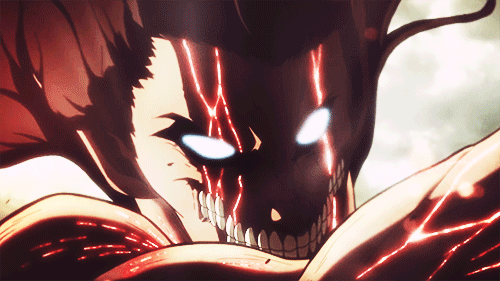
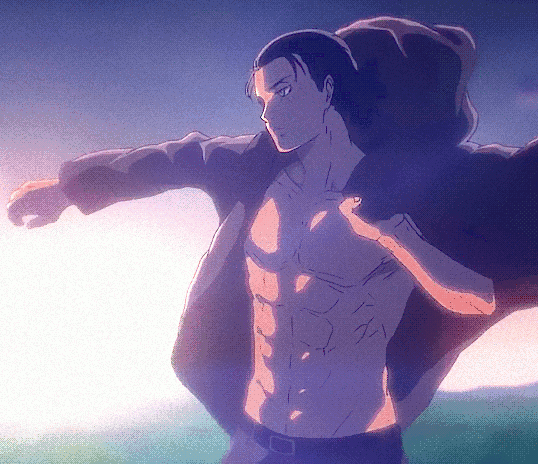

Eren Jaeger
Sobre Mi
Si bueno, pues soy el prota de AoT (Attack on Titan).Nací en Shiganshina, donde vivía con mis padres. Desgraciadamente tras el ataque de los titanes y la famosa brecha en el muro quedé huérfano. Esto me impulsó e incluso obligó a que ejerciese en lo que ahora es mi trabajo, acabar con los titanes... O por lo menos antes era así.
Formacion
Conocimiento avanzado en Biología molecular, gracias papá
@GrishaJaeger_official
Conocimiento puro de los titanes, tanto en anatomía como historia, y cualquier conocimiento derivado de los mismos. Todos adquiridos en la Legión de Reconocimiento
Estudios avanzados en exterminio de titanes, armas blancas, y técnicas de guerra, así como estrategias. Todo ello adquirido en la Legión de Reconocimiento
Experiencia Laboral
Trabajo en la Legión de Reconocimiento desde hace cuatro años como la "Punta de Lanza", desde que desperté el Titán.
Descubrí el misterio de los titanes, lo cual requería bastante dedicación.
Trabajé como rastreador de un titán infiltrado y erradiqué al enemigo.
Actualmente estoy refachero, me dedico a destruir todo porque creo que así ganaré la guerra xd.
Datos de Interes
Puedo convertirme en titán a gusto del consumidor

Una vez levante una roca enorme para tapar un muro
Soy una persona muy enfocada en mis objetivos
También tengo pelo Pantene
